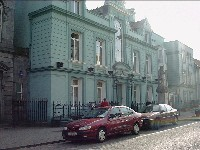

Town Hall

This 17th Century Building began its life as the private mansion of a local timber merchant by the name of Richard Hamerton. The building became an Inn in later years known as the "Globe Inn" . It was rebuilt in 1881 as the Town Hall under Alderman Edward Cantwell, Mayor and now contains the Municipal Offices and Council Chambers of the Clonmel Corporation.
The Council Chambers of the Town Hall house 2 important Historical Documents. On the left hand side of the Mayoral Chair are the Documents given by Charles 2nd to the Town of Clonmel bestowing a Grant to reconstruct the Town in 1654, four years after Oliver Cromwell's Siege
To the right of the Mayoral, Chair Documents incorporating the powers of the Corporation, were received by King William 2nd. The original documents were given to the Town in 1600 and were lost. The Document we see today were the replacements given by the King in 1697.
In 1992 while the Town Hall was undergoing renovations, a gun was discovered in the walls. It is not clear where it originated but it is believed that it was hidden there during the 1916 rising. The Gun is displayed in a glass case hidden in a panel of the walls in the Council Chambers
© 2004 Places to see in Clonmel.
I